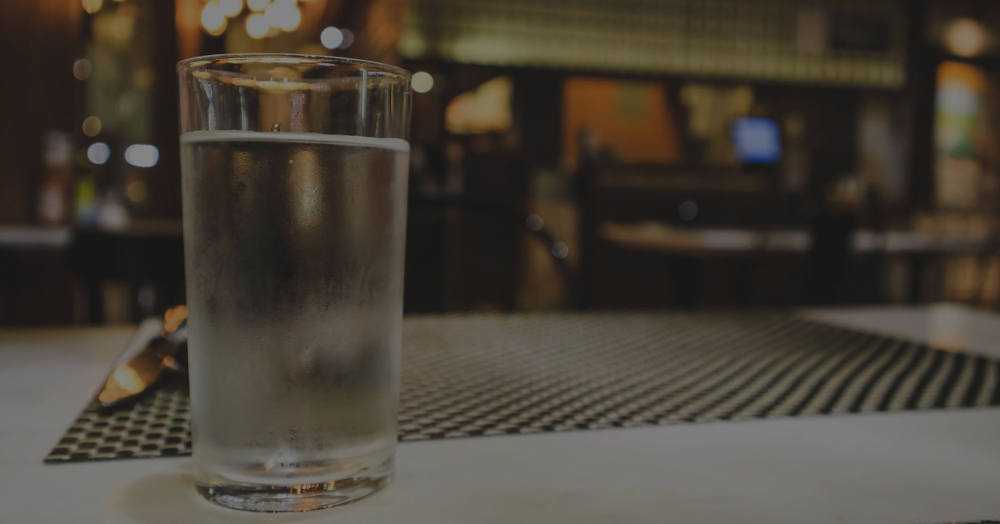
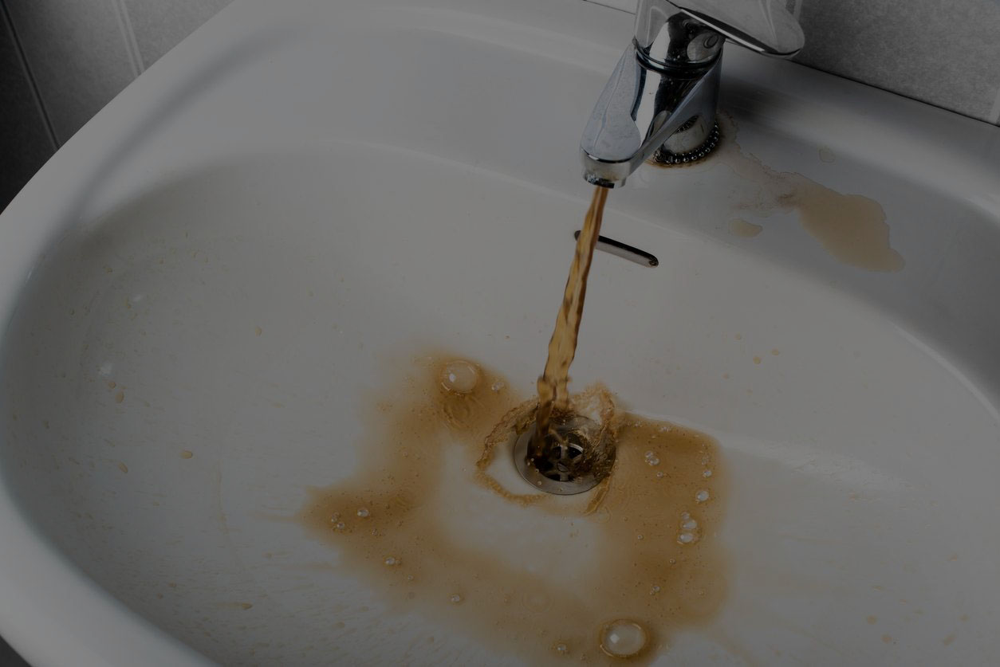
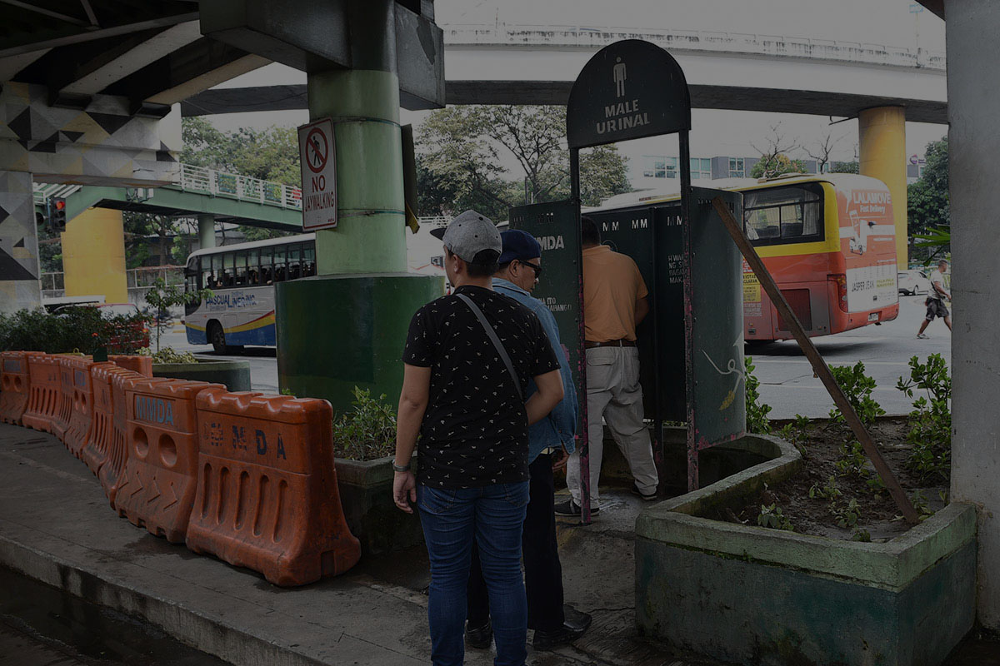
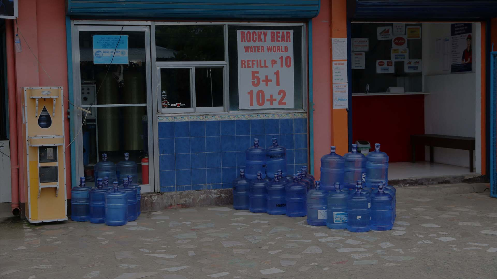

The problem of water inaccessibility is addressed through various policies that focus on ensuring clean and safe access to water.
1. Policy and Guidelines for the Comprehensive Water, Sanitation, and Hygiene in Schools (WinS) Program
The WinS program aims to have clean water for drinking and sanitation in all schools available throughout school hours. It also emphasizes the construction and maintenance of toilet facilities for every student. Retrieved from: https://www.deped.gov.ph/wp-content/uploads/2016/02/DO_s2016_10-1.pdf
2. Free Potable Water Act of 2019 and The Administrative Order No. 2014-0027
Free Potable Water Act of 2019 mandates that all food establishments in areas with a potable water supply system must provide free safe and clean drinking water to their customers. Retrieved from: https://legacy.senate.gov.ph/lisdata/3037027173!.pdf
Focuses on establishing reliable and safe water supply systems at the barangay level. This is supported by Senate Bill No. 596, introduced during the 13th Congress of the Republic. Retrieved from https://legacy.senate.gov.ph/lisdata/17511150!.pdf
Problem assumptions
✕
UP Diligan
2 min read · May 29, 2024
7.7k 18
What underlying assumptions or beliefs are present in the way this problem is being portrayed?

These policies exist because it is believed that access to clean and safe water for drinking and sanitation is a fundamental human right.
Policies that target schools are implemented because it is believed that providing students with access to free and safe water for drinking and sanitation contributes to their overall health and enhances their academic performance.
Policies that focus on the regulation and maintenance of water are in place because it is believed that establishing regulations and standards is necessary to ensure the safety and quality of water provided to various establishments. These regulations aim to safeguard public health and ensure that the water meets certain quality standards.
Access to clean water assumes that a person is within institutions (e.g. barangay, school, restaurant) that offer free clean water.
Causes of problem
✕
UP Diligan
2 min read · May 29, 2024
7.7k 18
How did this representation of the problem come about?

1. Climate change
Water reserves that are supposed to go to the general population goes to irrigation due to extreme weather conditions.
Lack of rain results in dams drying up which affects the masses through scheduled water service interruptions.
2. Poor maintenance of water service infrastructure
Dirty pipes contaminate clean tap water making clean tap water hazardous to drink.
Water service interruptions due to failure of water service infrastructure components
3. Lack of coverage from water services
Clean water needs to be bought from external communities.
Less developed areas do not have enough clean water supply.
4. Improper waste disposal to bodies of water
Toxic waste makes clean bodies of water unsafe to drink.
Issues silenced
✕
UP Diligan
2 min read · May 29, 2024
7.7k 18
What is left unproblematic in this problem representation? Where are the silences? Can the problem be thought about differently?

Despite the presence of policies aimed at providing clean water access to poor and marginalized communities, the lack of funding and logistics resulting from weak governance and corruption hampers the successful implementation of adequate infrastructure, water supply networks, and the delivery of clean water services.
Furthermore, the accountability of big industries and manufacturing entities in terms of proper waste management practices is not adequately enforced by current policies. As a result, these industrial activities contribute to the pollution of water sources, exacerbating the contamination and inaccessibility of clean water. The large-scale discharge of untreated or inadequately treated wastewater, along with the release of pollutants such as chemicals, heavy metals, and organic waste, significantly impairs water quality and poses risks to both ecosystems and human health.
Initiatives that aim to clean bodies of water are ineffective if proper waste disposal is not enforced.
Effects of the problem
✕
UP Diligan
2 min read · May 29, 2024
7.7k 18
What effects are produced by this representation of the problem?

When access to clean water is limited, it creates a situation where financially capable individuals can afford to buy or control access to clean water. In this situation, those who are economically disadvantaged face difficulties in obtaining affordable and dependable access to hydration, sanitation and irrigation. This disparity contributes to social inequalities and corruption.
Access to contaminated water results in outbreaks of water-borne diseases.
How the problem is defended
✕
UP Diligan
2 min read · May 29, 2024
7.7k 18
The problem was produced, disseminated, and defended in the following manner:
1. Corruption
Industries which dump toxic waste in water have influence on policies and the enforcement of said policies.
2. Source of income
Establishments which commercialize drinking water will be against the aim to provide free drinking water.
Major facilities nearby or in city centers already have water services
School departments could reason out that nearby cafeterias or kiosks already exist to not establish water fountains especially given that water fountains introduce maintenance costs.
How the problem is challenged
✕
UP Diligan
2 min read · May 29, 2024
7.7k 18
The conditions surrounding problem is intended to be questioned, disrupted, and replaced in the following manner:
UP Diligan is a student organization advocating for universal access to clean water, with its focus set on establishing clean water infrastructure in the academe and local communities. This advocacy is achieved through the following activities:
Protest
Voicing this issue to the public and media to gather proponents against the issue may force the governing bodies to resolve this problem.
Seminars, lectures, webinars
Educational discussions would open up more perspectives on the issue and possible solutions.
Outreach activities
Engaging proponents of the advocacy on activities which involve firsthand experience with communities affected by the issue would deepen the understanding of the problem and potentially give voices to the marginalized.